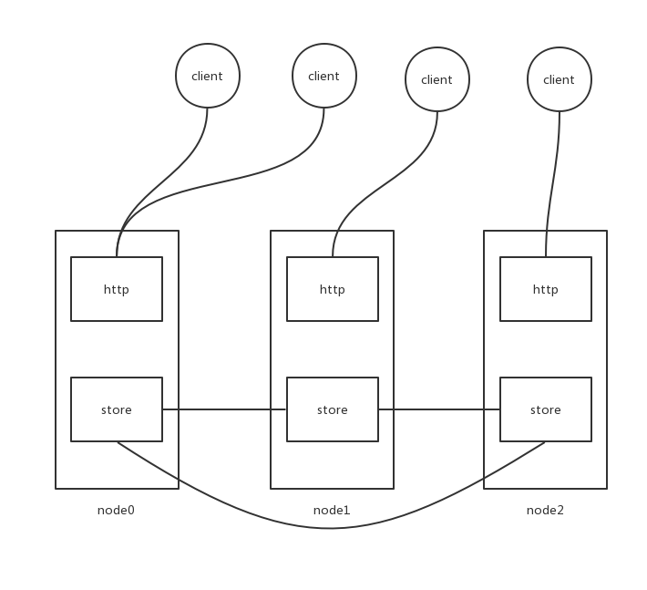

hraftd 源码分析
https://github.com/otoolep/hraftd
本文通过分析hraftd的源码，了解如何使用 raft库 hashicorp/raft。
为后面分析 hashicorp/raft 做准备。
简介
raft 是一个分布式一致性协议，它的目的是保持集群中节点状态的一致性，即使部分节点失败或者网络分区。当构建容错系统时，分布式一致性是一个基础的概念。
hraftd 是使用 hashicorp/raft 的一个例子，可以帮助我们学习raft。
但是它有很多问题并没有解决
- 当客户端访问一个非leader节点时，直接返回了失败。
- 可以返回重定向
- 可以节点内部代理
- 现在是3个节点提供读，所以可能读到脏数据
- 即使一个节点提供读，但是网络分区的情况下，仍可能读到脏数据
具体的使用可以参考 github的 README。
源码分析
hraftd 的结构如下

store 由以下几部分组成
raft.FSM负责存储业务状态，即http请求的kv都是存储在这里的raft.LogStore负责存储raft协议内部的日志。raft通过日志来同步状态机raft.StableStore负责存储raft协议内部的一些持久化数据raft.SnapshotStore负责存储FSM的快照，以压缩LogStoreraft.Tranport负责raft nodes之间的网络通讯
下面是 hraftd 使用 hashicorp/raft 代码摘录。1
2
3
4
5
6
7
8
9
10
11
12
13
14
15
16
17
18// Instantiate the Raft systems.
ra, err := raft.NewRaft(config, (*fsm)(s), logStore, stableStore, snapshots, transport)
if err != nil {
return fmt.Errorf("new raft: %s", err)
}
s.raft = ra
if enableSingle {
configuration := raft.Configuration{
Servers: []raft.Server{
{
ID: config.LocalID,
Address: transport.LocalAddr(),
},
},
}
ra.BootstrapCluster(configuration)
}
raft.FSM
1 | // FSM provides an interface that can be implemented by |
raft 负责同步日志，存储日志，压缩日志。但是实际状态的存储，需要raft使用者自己实现。FSM接口 是 raft -> fsm instance （数据从 raft 流向 fsm instance）。
raft.LogStore
1 | // LogStore is used to provide an interface for storing |
LogStore 是由raft使用者实现，用于 raft log 持久化。
raft.StableStore
1 | // StableStore is used to provide stable storage |
raft 协议实现上需要一些持久化的状态。
raft.SnapshotStore
1 | // SnapshotStore interface is used to allow for flexible implementations |
日志的快照存储
raft.Tranport
1 | // Transport provides an interface for network transports |
Note
源码引用的hashicorp/raft
https://github.com/hashicorp/raft